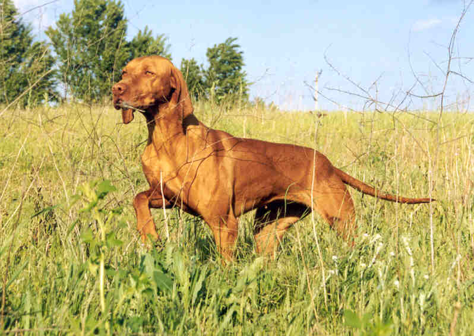
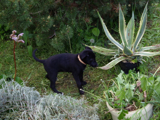
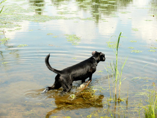
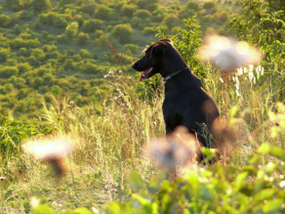

Először döntsük el, miért szeretnénk kutyát tartani: társnak, őrzésre, sportra vagy mindezért együtt, mondja Fort András kutyapszichológus. Gondoljuk végig, van-e elég lelki- és fizikai erőnk az adott fajtához. Van-e megfelelő méretű területünk, vagy elegendő szabadidőnk a kiadós sétákhoz, kirándulásokhoz.

Játékos és intelligens. A leginkább kötődő, legsokoldalúbb kutya. Szépségével, ragaszkodásával, bárkit levesz a lábáról. Nyugodt. Rövid szőre és barátságos természete miatt bátran ajánlható lakásba is. Jóindulatú, kissé érzékeny lelkű, a durvaságot nem viseli el. Nagyon játékos, imád dolgozni, vadászni. Lehet, hogy kedvenc fotelunkat elorozza, de nem lehet rá haragudni. Kitűnő vadász- és sportkutya, odaadó társ, de a betörőt nem rettenti el.
Családszerető. Nem agresszív, ideális társ. Házőrzésre alkalmatlan, bár családtagjaiért bátran kiáll. Alakíthatósága lehetőséget biztosít arra, hogy ne csak vadásszanak vele, hanem kábítószer kereső, vagy vakvezető kutyát képezzenek belőle. Kifejezetten családszerető, rajong a gyerekekért, szeret velük hancúrozni, szinte mindent eltűr tőlük.

Bolondos, igazi mókamester. Gazdája sohasem fog unatkozni, mindig képes megnevettetni kétlábú falkavezérét. Bármilyen kicsi is egy foxi, következetes nevelést igényel kölyökkorától kezdve, ha nem akarjuk, hogy a fejünkre nőjön. Megfelelő motivációval gyorsan tanulnak, hiszen rendkívül intelligensek. Nem szabad azonban lebecsülni a foxterrier veleszületett vadászszenvedélyét, és nagy hangsúlyt kell fektetni a behívás tanítására, hogy bármilyen szituációban magunkhoz hívhassuk kutyánkat.

Mindezen kutyák legjobb tulajdonságainak keveréke, az én kutyám:


